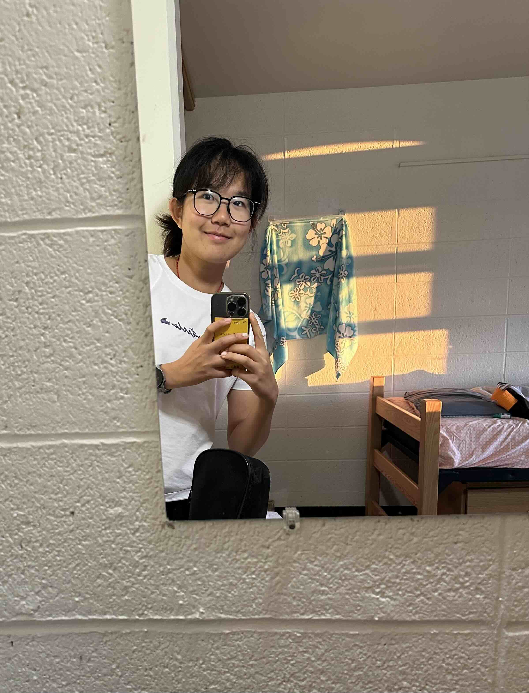

“Let us first of all and before all be kind,
then honest,
and then let us never forget one another.”
I am a student.
I am interested in machine learning, optimization, and decision-making.
This website is a small archive of where I've been and what I've loved.

Hefei · Beijing · Rochester · Philadelphia · and beyond
Asia · North America · and more to come
Thoughts on stories that move me.
Snapshots of life, people, runs, sunsets, and everything in between.